Manager Desk TODAY
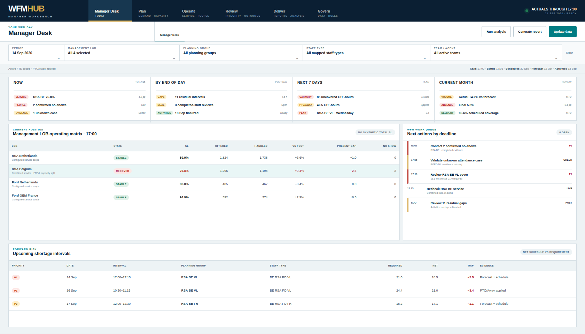
Demand & Requirement PLAN
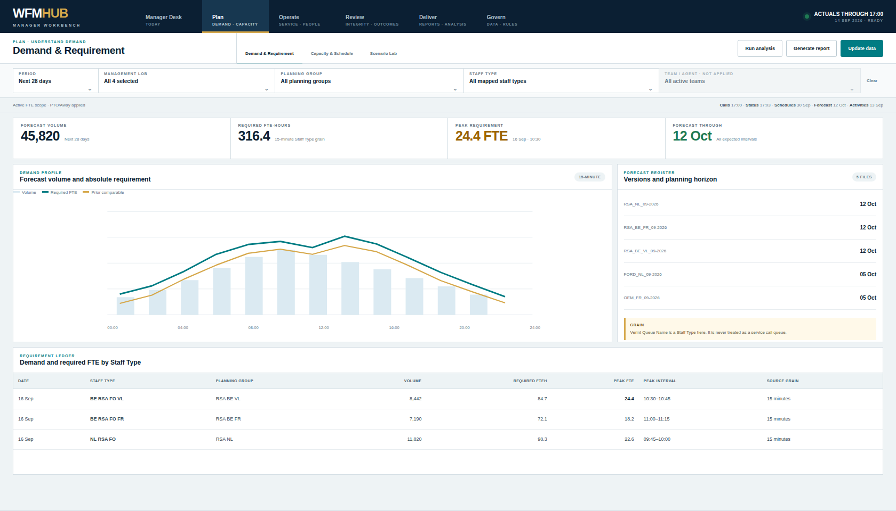
Capacity & Schedule PLAN
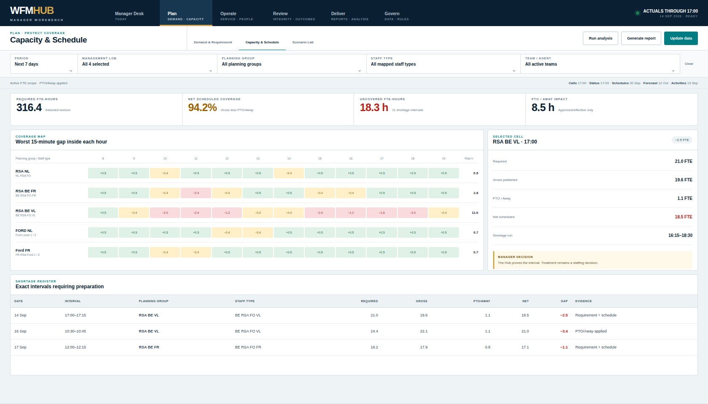
Scenario Lab PLAN
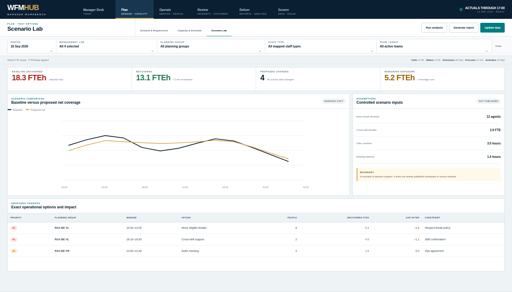
Live Service OPERATE
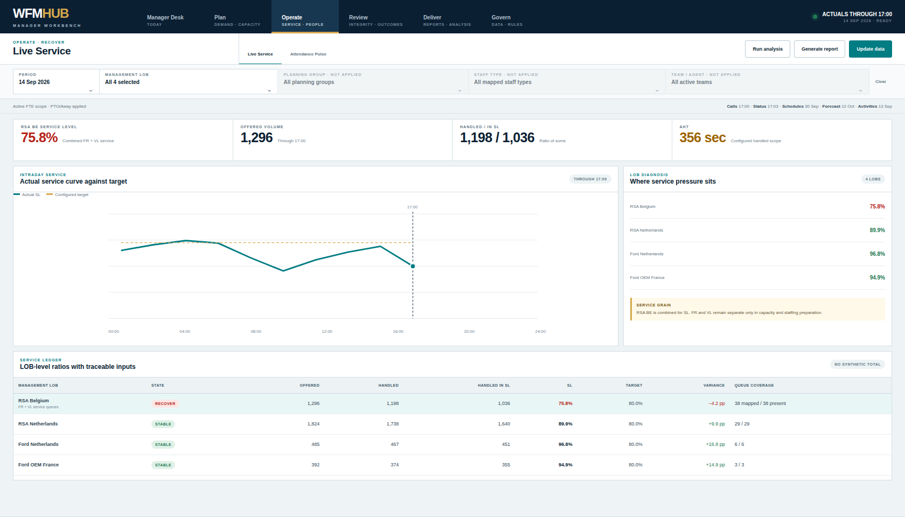
Attendance Pulse OPERATE
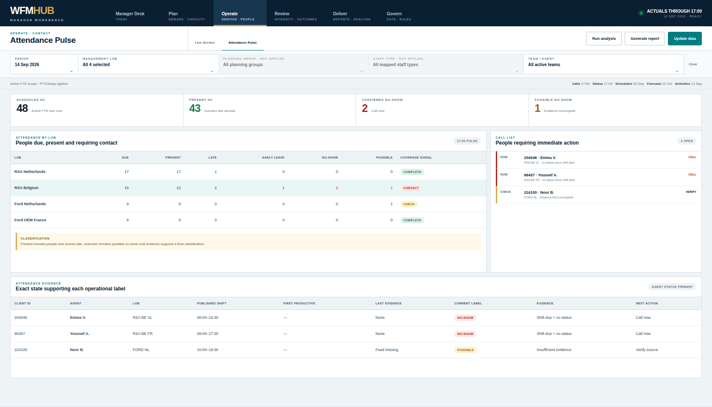
Schedule Integrity REVIEW
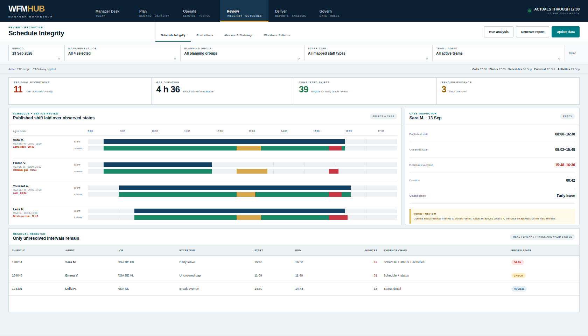
Realisations REVIEW
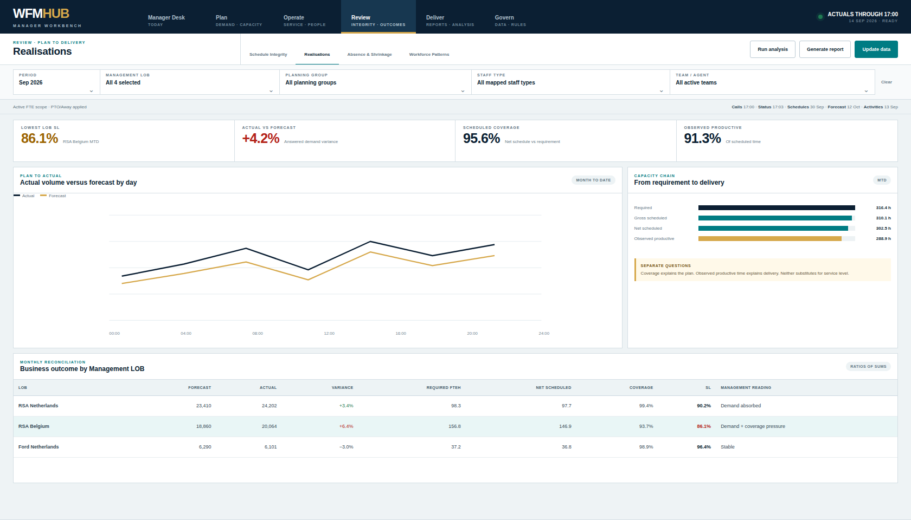
Absence & Shrinkage REVIEW
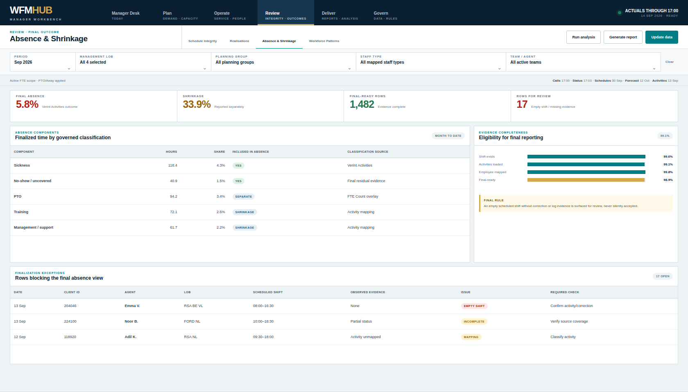
Workforce Patterns REVIEW
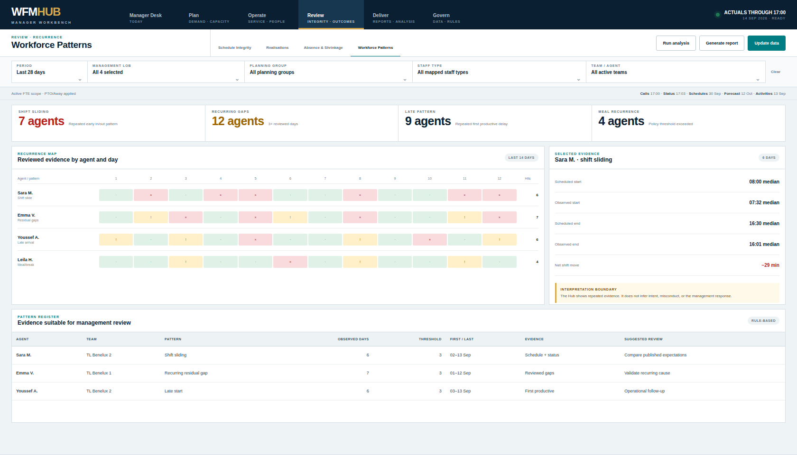
Reports & Analysis DELIVER
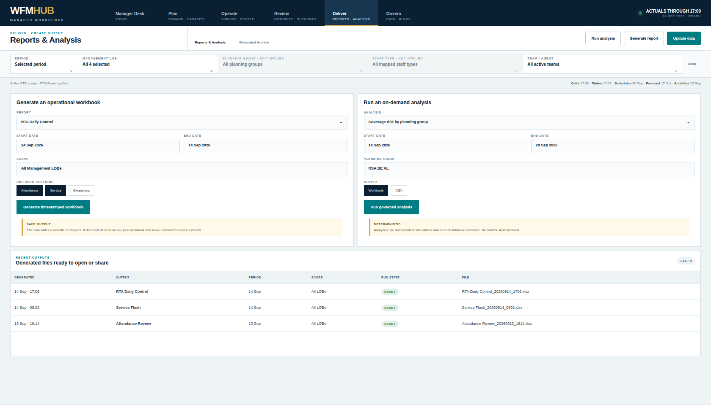
Generated Archive DELIVER
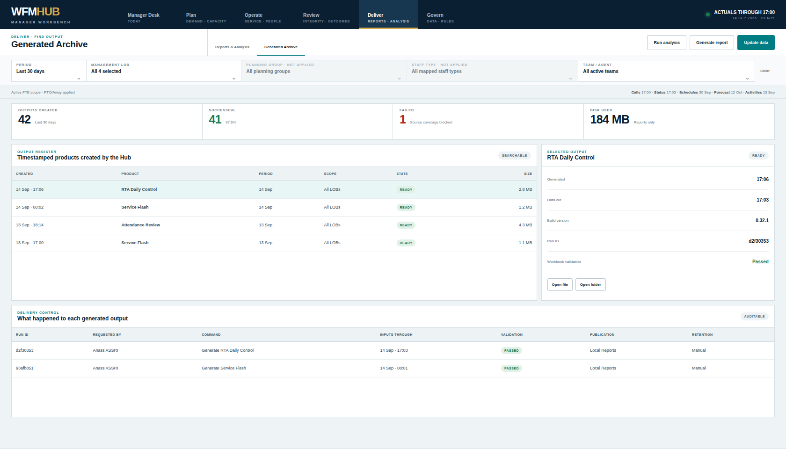
Data Readiness GOVERN
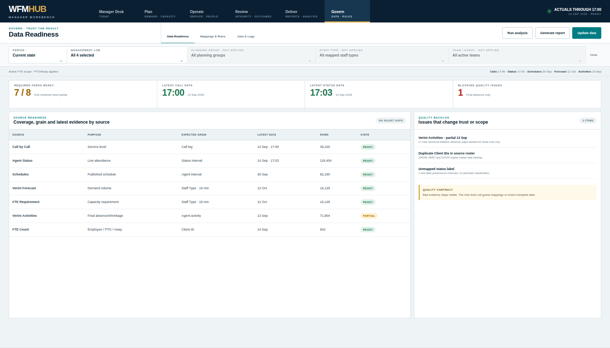
Mappings & Rules GOVERN
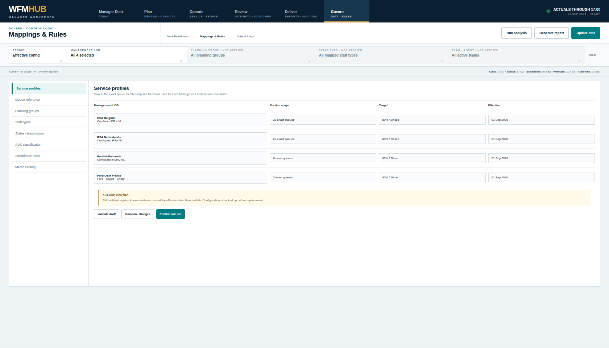
Jobs & Logs GOVERN
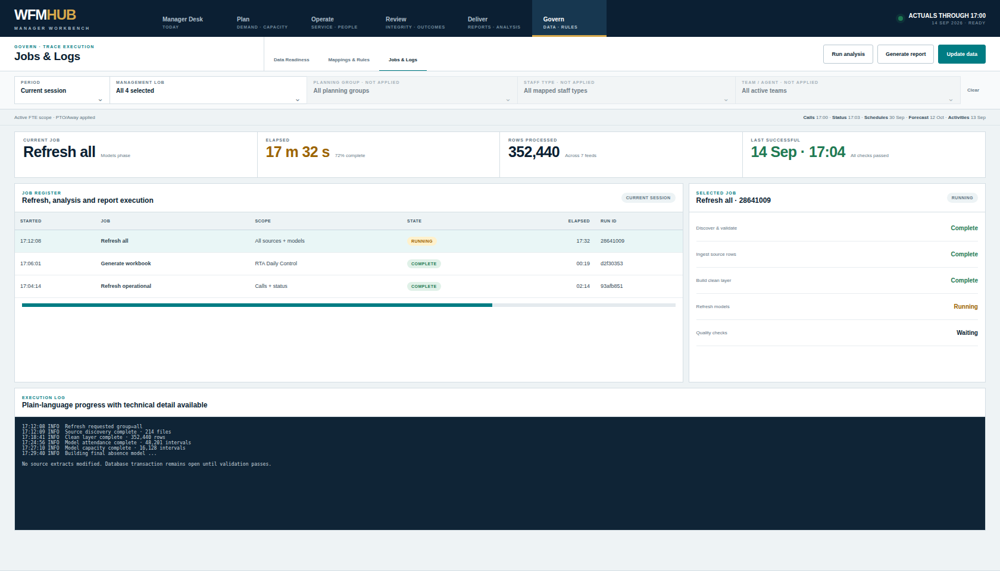